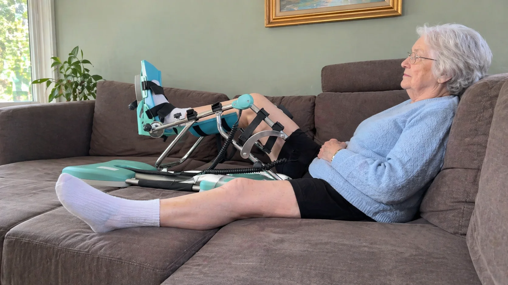

Bij een synovectomie van de knie verwijdert de orthopedist het ontstoken gewrichtsslijmvlies (de synovia) uit uw kniegewricht. Dat gebeurt bijvoorbeeld bij reumatoïde artritis, bij een chronisch gezwollen knie door synovitis of bij een zeldzame aandoening zoals een tenosynoviale reuzenceltumor (vroeger PVNS). Na de ingreep is uw knie vaak dik, gevoelig en geneigd om stijf te worden. Daarom schrijven veel chirurgen een kinetec voor thuis voor: een toestel dat uw knie zacht en ritmisch laat buigen en strekken. In dit artikel leest u wat een synovectomie inhoudt, waarom de kinetec zo nuttig is, hoe een voorbeeldschema in graden eruitziet en waar u de eerste weken op let.
Kort samengevat
Na een synovectomie start de kinetec meestal binnen de eerste dagen. U begint rond 0–40° en bouwt in drie tot vijf weken op naar 110–120°. Regelmatig en zacht bewegen beperkt de zwelling en helpt voorkomen dat er verklevingen ontstaan op de plaats waar het slijmvlies verwijderd werd.
Wat is een Synovectomie van de Knie?
De binnenkant van uw kniegewricht is bekleed met een dun vlies: het synovium of gewrichtsslijmvlies. Het maakt gewrichtsvocht aan dat het kraakbeen voedt en smeert. Bij sommige aandoeningen raakt dat vlies chronisch ontstoken en verdikt het. Het produceert dan te veel vocht, de knie blijft gezwollen en warm, en op termijn kan het ontstoken weefsel het kraakbeen beschadigen.
Een synovectomie wordt onder meer overwogen bij:
- Reumatoïde artritis of andere ontstekingsreuma, wanneer één knie ondanks medicatie gezwollen blijft. Meer daarover leest u in ons artikel over de kinetec bij reumatoïde artritis van de knie.
- Tenosynoviale reuzenceltumor (TGCT, vroeger PVNS): een goedaardige woekering van het slijmvlies die terugkerende zwelling en bloedingen in de knie geeft.
- Hemofilie, waarbij herhaalde bloedingen in het gewricht het slijmvlies verdikken.
- Chronische synovitis zonder duidelijke oorzaak, of na een infectie.
Kijkoperatie of Open Ingreep?
De chirurg kan het slijmvlies op twee manieren verwijderen. Bij een artroscopische synovectomie werkt hij of zij via enkele kleine sneetjes met een camera. Het herstel verloopt dan meestal vlotter. Algemene uitleg over zo'n ingreep vindt u in ons artikel over de kinetec na een knie-artroscopie. Bij een open synovectomie, bijvoorbeeld bij een uitgebreide tumor of wanneer ook de achterkant van de knie behandeld moet worden, is er een grotere snede. De knie is dan langer gezwollen en het opbouwen van de beweeglijkheid vraagt meer geduld.
In beide gevallen geldt dezelfde uitdaging: het gewricht reageert op de ingreep met veel vocht en soms een bloeduitstorting in de knie. Op de plaats waar het slijmvlies verwijderd werd, groeit nieuw bindweefsel. Ligt de knie de eerste weken te veel stil, dan kan dat weefsel verkleven en krijgt u een knie die niet meer volledig buigt of strekt. Lees daarover ook ons artikel over een stijve knie of artrofibrose voorkomen.
Waarom de Kinetec Helpt na een Synovectomie
Een kinetec of CPM-machine (Continuous Passive Motion) beweegt uw knie traag en gelijkmatig tussen twee ingestelde hoeken. U hoeft zelf niets te doen: het toestel tilt uw onderbeen op en laat het weer zakken. Na een synovectomie heeft dat een aantal duidelijke voordelen:
- Minder verklevingen: het nieuwe bindweefsel wordt telkens zacht gerekt en blijft daardoor soepel.
- Minder zwelling: de ritmische beweging werkt als een pomp die vocht en bloed uit het gewricht helpt afvoeren. Meer tips vindt u in ons artikel over knie zwelling na een operatie verminderen.
- Voeding voor het kraakbeen: beweging verspreidt het gewrichtsvocht over het kraakbeen, wat vooral bij reuma-patiënten met al wat slijtage belangrijk is.
- Minder angst om te bewegen: een voorspelbare, passieve beweging voelt rustiger aan dan de knie zelf buigen terwijl die nog pijnlijk en dik is.
De kinetec vervangt de actieve oefeningen en de begeleiding door uw kinesitherapeut niet. Hij zorgt vooral dat uw knie in de eerste weken vaak genoeg beweegt, ook op de momenten dat u zelf nog weinig kunt.

Voorbeeldschema na een Synovectomie
Het schema hieronder is een voorbeeld na een artroscopische synovectomie met een vlot herstel. Na een open ingreep of bij veel bloeding in de knie verloopt de opbouw trager. Uw chirurg of kinesitherapeut bepaalt altijd wanneer u start en hoe ver u mag gaan. Een algemeen overzicht vindt u in ons kinetec gebruiksschema in graden per dag.
20–30 min
als zwelling meevalt
30–45 min
fietsen en oefeningen
Begin elke sessie een paar graden onder het bereik van de vorige keer en verhoog pas na enkele rustige cycli. Laat de snelheid laag staan, zeker de eerste dagen. Werk ook aan de strekking: probeer het minimum op 0° te zetten zodra uw chirurg dat toelaat. Hoe u de hoeken en snelheid aanpast, leest u in onze handleiding voor het instellen van de kinetec.
| Wat u merkt | Wat het meestal betekent | Wat u doet |
|---|---|---|
| Trekkend, gespannen gevoel tijdens het buigen, weg na de sessie | Normale rek op een gezwollen knie | Doorgaan, graden behouden of licht verhogen |
| Knie dikker en warmer de ochtend na een sessie | Te snel opgebouwd of te lang gebruikt | 5 tot 10° terug, koelen en hoogleggen |
| Plots een strakke, sterk gezwollen knie met blauwe verkleuring | Mogelijke bloeding in het gewricht | Kinetec stoppen en uw chirurg contacteren |
| Buiging blijft na drie weken steken onder 80° | Risico op verklevingen | Bespreken met uw chirurg of kinesitherapeut |
Pijn, Zwelling en Bloeding de Eerste Weken
Het gewrichtsslijmvlies is rijk aan bloedvaatjes. Na het verwijderen ervan is een gezwollen knie dus heel normaal. Enkele tips om de eerste weken door te komen:
- Neem uw pijnstilling op tijd, ongeveer een half uur voor een sessie. Lees ook ons artikel over pijnstillers en de kinetec.
- Koel de knie na elke sessie met een coldpack in een handdoek, tien tot vijftien minuten.
- Leg het been hoog tussen de sessies, zonder kussen onder de knie zelf.
- Span uw dijspier regelmatig aan; zie onze uitleg over quadriceps-activatie na een knieoperatie.
- Volg uw bloedverdunners en reumamedicatie zoals uw arts het voorschrijft. Bij hemofilie gebeurt de revalidatie altijd in overleg met het hemofiliecentrum. Meer over dit onderwerp leest u in ons artikel over de kinetec en bloedverdunners.
Neem contact op met uw arts bij:
- Koorts boven 38°C of een wonde die rood wordt en vocht afgeeft
- Een knie die snel heel dik, strak en blauw wordt
- Pijn, zwelling en warmte in de kuit, wat op een trombose kan wijzen
Na de Kinetec: Verder Herstellen
Zodra u vlot boven 110° buigt en de knie volledig strekt, kunt u de kinetec meestal afbouwen. Het herstel gaat daarna verder met actieve oefeningen onder begeleiding van uw kinesitherapeut:
- Week 3 tot 6: fietsen zonder weerstand, bijvoorbeeld op een hometrainer, en wandelen zonder krukken
- Week 6 tot 12: kracht van de dij-, heup- en kuitspieren opbouwen, trappen lopen en evenwicht
- Op lange termijn: bij reuma of TGCT blijft opvolging door uw arts belangrijk, omdat de ontsteking of woekering kan terugkomen
Meet uw buiging af en toe, zodat u de vooruitgang ziet. Hoe dat thuis lukt, leest u in ons artikel over kniebuiging meten thuis. Twijfelt u wanneer u mag stoppen, lees dan hoe lang u een kinetec huurt.
Kinetec Huren bij PhysioVisit
Bij PhysioVisit huurt u een professionele kinetec CPM-machine voor €17 per dag. We leveren en installeren het toestel overal in België, stellen het in volgens het advies van uw chirurg en tonen u hoe u het veilig gebruikt. Plant u de levering best vóór uw ontslag uit het ziekenhuis, zodat u meteen thuis verder kunt.
Woont u in de regio Grimbergen, Strombeek-Bever, Humbeek, Beigem of Koningslo? Dan begeleidt onze kinesitherapeut u ook thuis via kinesitherapie aan huis. Voor de fase na de kinetec kunt u een hometrainer huren voor €2 per dag.
Over de terugbetaling
De terugbetaling van een kinetec verloopt via uw verzekering, niet via de mutualiteit. Wij bezorgen u een factuur die u bij uw verzekeraar indient. Sommige polissen betalen alles terug, andere de helft of een beperkt bedrag. Vraag dit altijd na bij uw eigen verzekering. Meer uitleg vindt u in ons artikel over de kinetec terugbetaling in België.
Veelgestelde Vragen
Kinetec Nodig na uw Synovectomie?
Wij leveren en installeren uw kinetec aan huis in heel België en stellen het toestel in volgens het advies van uw chirurg. Vanaf €17/dag.
Conclusie
Een synovectomie van de knie neemt het ontstoken slijmvlies weg, maar laat een gezwollen en gevoelige knie achter. Door de knie de eerste weken regelmatig en zacht te laten bewegen met de kinetec, beperkt u de zwelling en voorkomt u verklevingen. Bouw rustig op, koel na elke sessie, let op tekenen van een bloeding en stap tijdig over op actieve oefeningen.
Wilt u een kinetec laten klaarzetten voor uw thuiskomst, of twijfelt u of het toestel in uw situatie zinvol is? Neem gerust contact met ons op. Lees ook hoe u verklevingen in de knie na een operatie voorkomt.